Ramo fase2-misto, worktree misto, commits 3e68f58, 14d721a, c9b5d9b e ccdbf87, comparados com o 9b00960 (antes dos consertos). Isto não é aprovação: quem marca é o Samuel.
PRONTO PARA CONFERIR. Os quatro consertos funcionam na janela real (1600 × 821 px, que é 1280 × 657 pontos, o tamanho do notebook do Kaique a 150%), e a janela nunca ficou parada mais de 0,12 s. Ficam três ressalvas pequenas, que já existiam antes destes commits e não são deles: um cartão que fica em "preparando..." para sempre, o aviso "Tinta forte fora do texto" que demora a sair das outras páginas, e os botões "Aplicar em" encostando na tira de miniaturas com o "Mais opções" aberto.
| Item | Como foi conferido | Resultado |
|---|---|---|
| (a) pytest | máquina, um arquivo por vez (75 arquivos), numa cópia git archive do ccdbf87 |
1464 passaram, 59 pularam, 0 falhas. O test_camadas pulou 26 testes na primeira passada (a cópia ainda não tinha as páginas do gabarito); repetido sozinho com elas: 90 de 90. Os outros pulados são dos leitores de texto (OCR), que se pulam sozinhos |
| (a) os 5 arquivos do Misto, de novo | máquina, por mim, numa cópia nova do ccdbf87 |
105 de 105 passaram |
(a) teste_botoes.py |
máquina, numa cópia git archive com saida_teste e pasta de dados próprias |
132 ações, 0 falhas (ele não clica em nada do Misto) |
| (b1) alerta "Tem cor" some com "Só as letras" | olho, janela real, mouse nativo | funciona, e o "Para revisar" acompanha |
| (b2) cartão "Preto e branco" com o Misto | olho, janela real; tempo medido | funciona; o cartão chega em 1,6 a 2,1 s e a janela não trava |
| (b3) bloco AJUSTE inteiro em 1280 × 657 | olho e máquina (altura do bloco e da barra) | funciona; o defeito antigo foi reproduzido no 9b00960 e não acontece mais |
| (b4) "Só as letras" só com o Preto e branco, e a frase-resumo | olho, janela real | funciona, guardando a escolha; as três frases (A, B, C) conferem |
(c) páginas sem "Só as letras" iguais ao 9b00960 |
máquina (pixel a pixel) e olho | 10 de 10 páginas idênticas (5 páginas × 2 projetos) |
| (d) a janela nunca fica mais de 1 s sem responder | máquina (mensagem nativa à janela a cada 100 ms, a sessão inteira) | maior parada: 0,119 s (na análise, depois de "Conferir"); nos quatro consertos, no máximo 0,096 s; nenhuma acima de 0,25 s |
velocidade (teste_velocidade.py) |
não rodei | ver Ressalvas |
Moldura dourada e iluminura continuam como defeito conhecido até o Samuel fechar a Fase 1. Nada aqui muda isso.
livro-misto2.pdf, 5 folhas): Escola de Jesus 7, Opus Majus 20, Horas 11, Palatino 9 e Graduale 222, copiadas de gabarito\paginas (só lidas). "Dividir folhas ao meio" desligado, Preto e branco, "Só as letras" ligada no livro, botão "Guardar a tinta forte".git archive do 9b00960. Depois: cópia git archive do ccdbf87 (conferi com diff que as cópias são iguais aos commits). Cada uma com a sua pasta de dados (LOCALAPPDATA e USERPROFILE no scratchpad), nunca a pasta real.PrintWindow. Aproveitei o piloto do primeiro parecer e o do verificador anterior (que foi interrompido), já com o conserto do laço de espera (olha a resposta uma última vez antes de desistir). Nenhuma espera deu "sem resposta".3e68f58)Antes (9b00960): com "Só as letras" ligada, a página 1 (Escola 7) mostrava a faixa laranja "Esta página tem cor - o preto e branco vai perder a ilustração", o botão "usar Mágico pro nesta" e o "Para revisar" contava 4 (Tem cor 3).
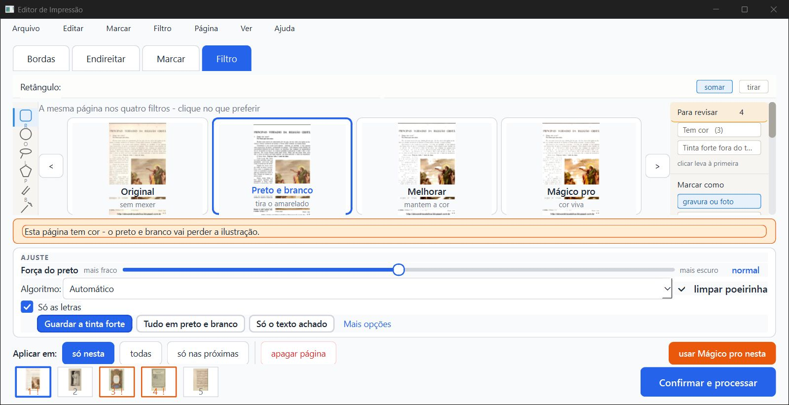
Depois (ccdbf87): com "Só as letras" ligada, a faixa diz "Esta página vai sair em Preto e branco", sem botão laranja; o "Para revisar" conta 1 (só a "Tinta forte fora do texto" da Palatino); as miniaturas 1 e 3 deixam de ficar laranja.
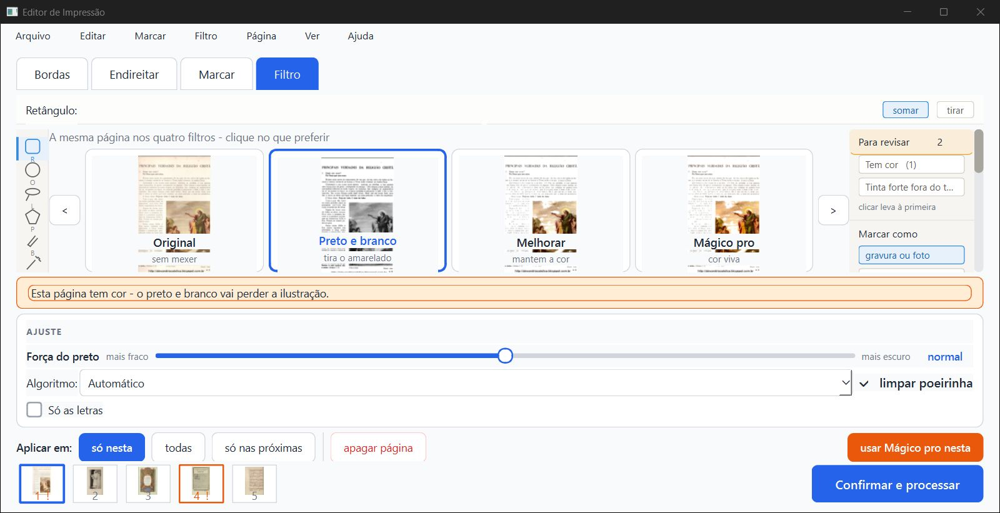
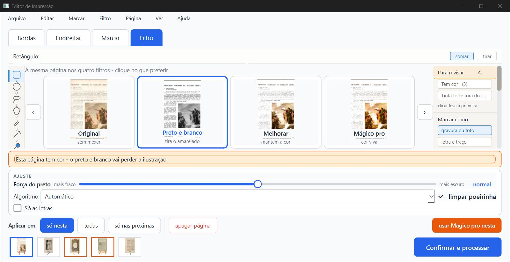
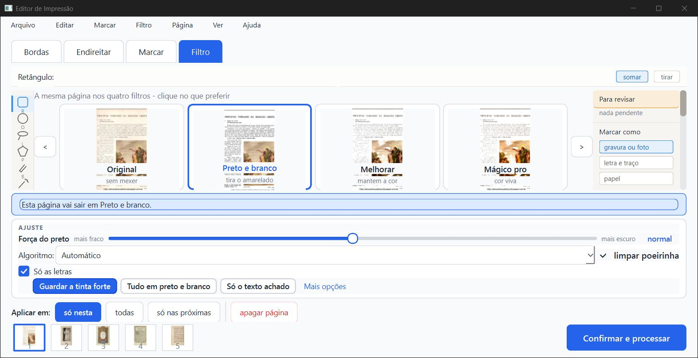
O que vi no print 07: "nada pendente", mas a Palatino (página 4) já tinha de volta, gravado na página, o aviso "Tinta forte fora do texto"; o painel só mostrou isso depois de eu trocar de página. É a ressalva 2, abaixo (não é o "Tem cor").
14d721a)Antes: numa página posta em Original (Opus 20), o cartão "Preto e branco" ficou em "preparando..." e não saiu disso em 32 s. (No primeiro parecer, por outro caminho, ele mostrava a estátua estourada em preto e branco puro, sem o Misto.)
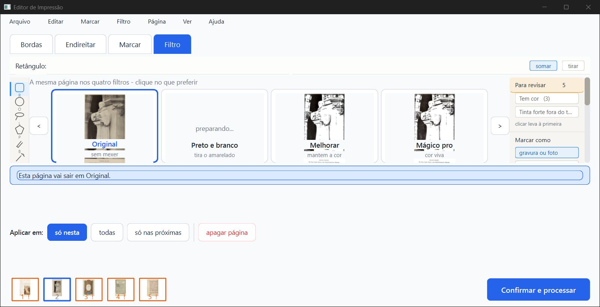
Depois: o cartão mostra a estátua no tom do original (cinza-sépia, como no cartão "Original") e a legenda de baixo em preto e branco: é o que sai escolhendo o Preto e branco com "Só as letras". Chegou em 2,1 s; a janela respondeu o tempo todo (pior resposta nesse trecho: 0,096 s).
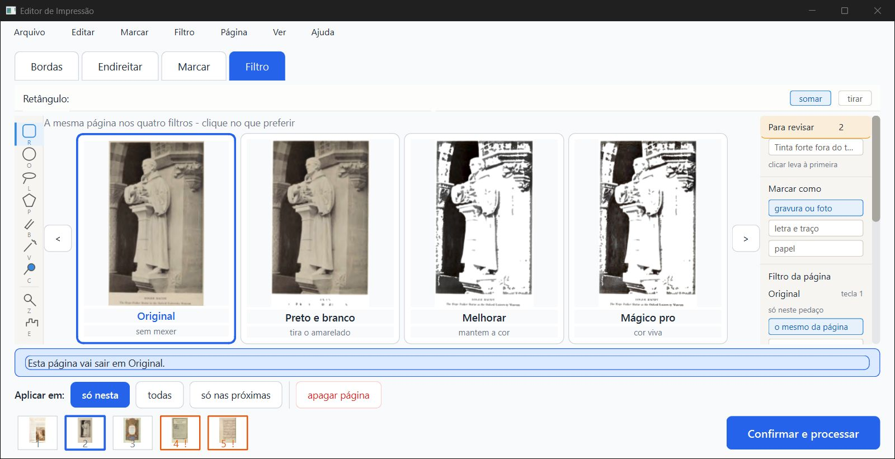
Fiz também o caso "frio" na Horas 11: troquei para o botão "Tudo em preto e branco" e, logo em seguida, cliquei em Original. O cartão "Preto e branco" chegou em 1,8 s com a moldura iluminada em cor (a página inteira é gravura), e a janela não travou.
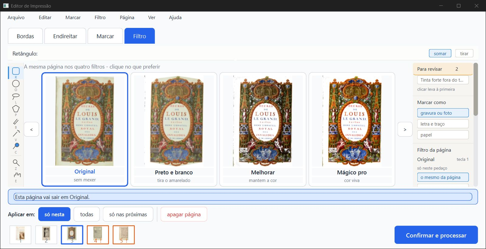
c9b5d9b)O defeito só aparece num caminho certo: a página já está em Original quando se entra na aba Filtro (eu troquei para a aba Marcar e voltei), e aí se escolhe o cartão "Preto e branco".
Antes: o bloco AJUSTE virou uma faixa vazia de 17 px, sem "Força do preto", sem "Só as letras" e sem os três botões, e os botões "Aplicar em" ficaram sem texto.
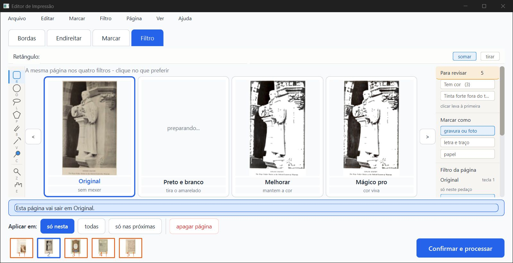
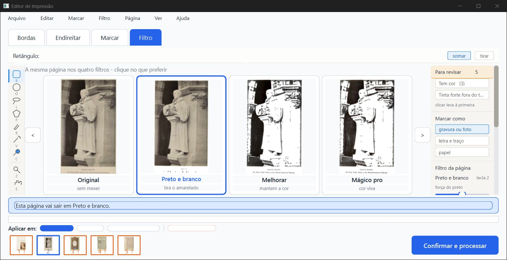
Depois, no mesmo caminho: o bloco aparece inteiro (146 px, a altura que ele pede): "Força do preto", "Algoritmo", "Só as letras" marcada, os três botões e o "Mais opções"; os "Aplicar em" com texto. Abrindo o "Mais opções", a barra cresce (195 px) e mostra "Papel de dentro das gravuras" e "Letras dentro de molduras e iluminuras". Voltando ao Original, a barra encolhe (39 px) e não deixa buraco.
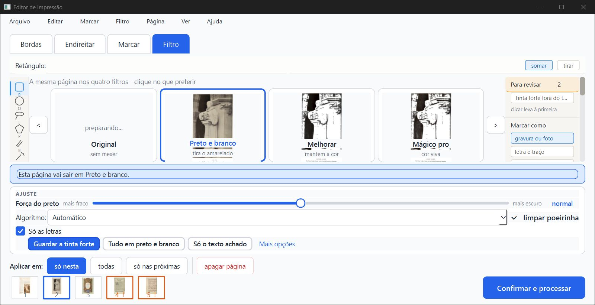
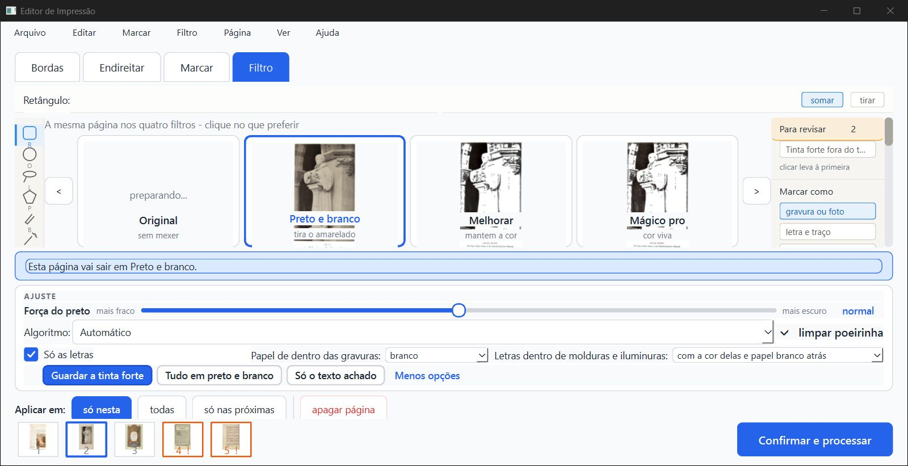
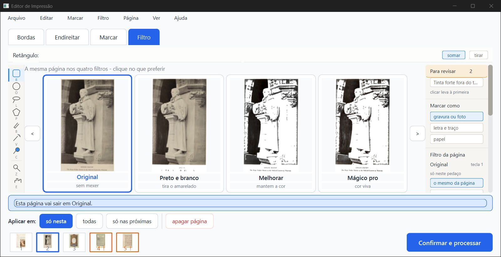
O que vi no print 14: com o "Mais opções" aberto, os botões "só nesta", "todas", "só nas próximas" e "apagar página" ficam com a borda de baixo encostada (um pouco coberta) na tira de miniaturas. Dá para clicar; é a ressalva 3.
ccdbf87)Antes: com o Original escolhido, "Só as letras" e os três botões continuavam à vista; e o resumo dizia "deixar tudo em preto e branco e separar as gravuras do texto" mesmo com "Só as letras" marcada.
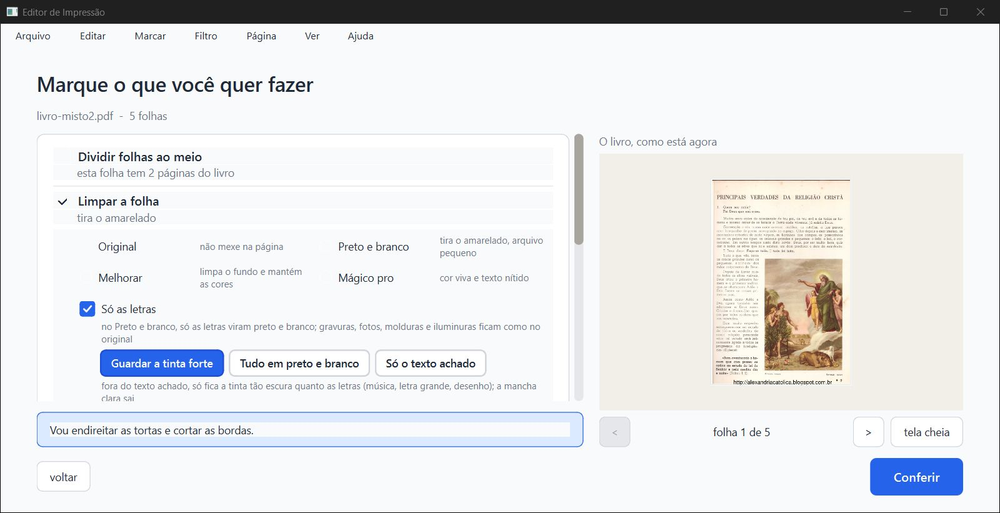
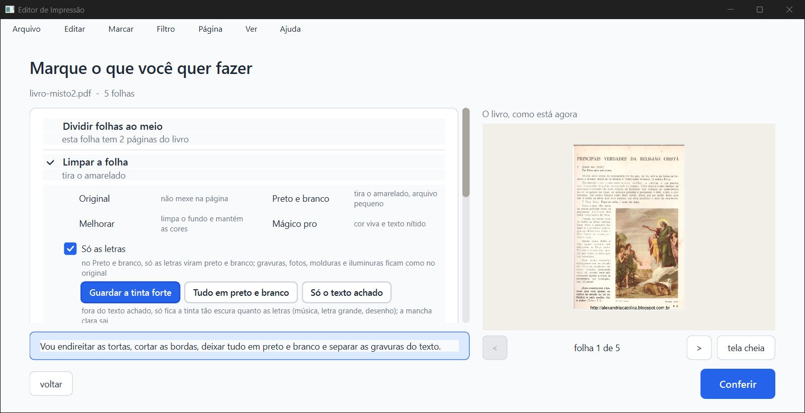
Depois:
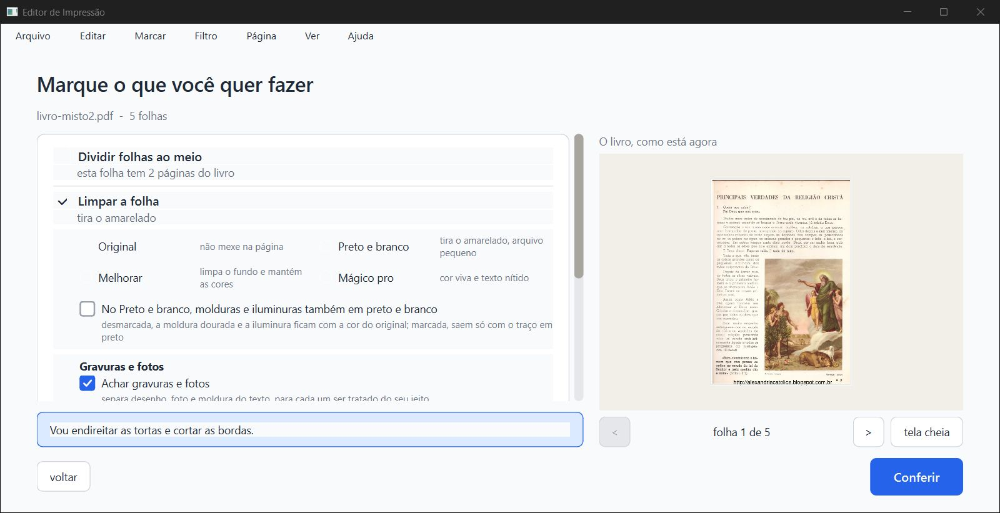
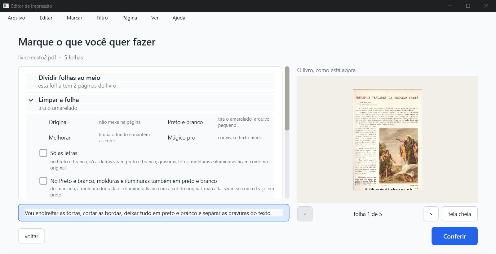
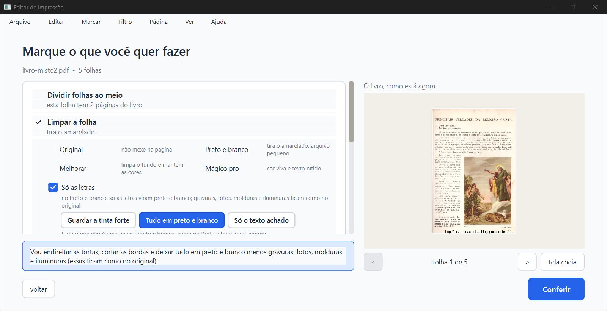
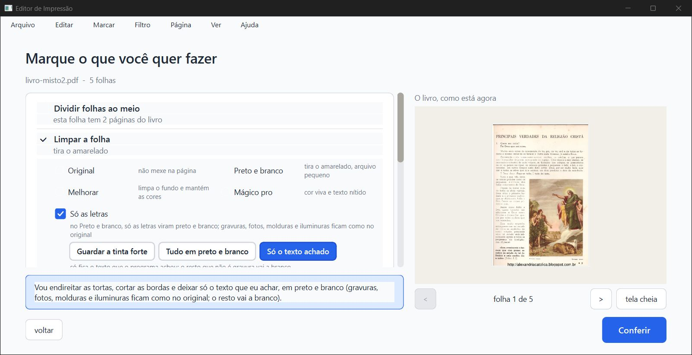

A frase com "Achar gravuras e fotos" desligado ("as gravuras que você marcar à mão") não foi conferida na janela: o clique na caixinha não a desmarcou (ela estava fora da parte visível da lista). Ela está coberta por um teste de máquina (test_misto_consertos.py).
9b00960Gravei dois projetos pela janela e processei cada um com o código do 9b00960 e com o do ccdbf87 (sem janela), comparando as imagens das páginas do PDF ponto por ponto:
Resultado: as 10 páginas são idênticas (diferença zero em todos os pontos), inclusive as que passam pelo Misto. Olhei as 10 lado a lado:
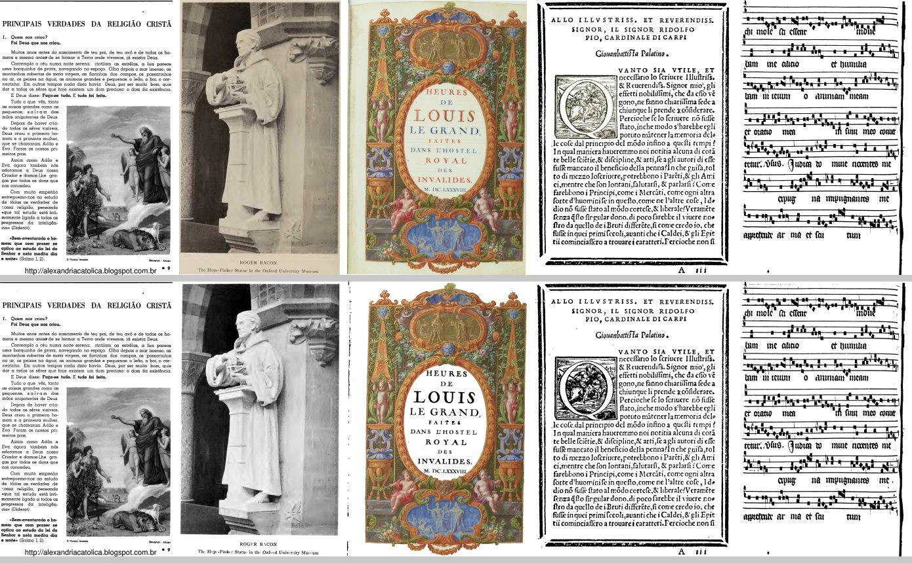
O que vi, página por página: Escola 7 com a gravura em cinza (sem "Só as letras"); Opus 20 em sépia no Original e em cinza no projeto 2; Horas 11 em cor nos dois projetos (a página inteira é gravura e moldura: defeito conhecido); Palatino 9 com o texto preto e a inicial ornada; Graduale 222 com as notas pretas e limpas.
Um vigia mandou uma mensagem nativa (WM_NULL, com 30 s de limite) à janela a cada 100 ms, a sessão inteira (5754 medidas em 9,7 min no ccdbf87):
9b00960, no mesmo roteiro, a maior foi 0,333 s (ao entrar na aba Filtro).ccdbf87: a Opus 20 em Original e, ao escolher o cartão "Preto e branco", o cartão Original ficou em "preparando..." (esperei 33 s; voltou ao clicar de novo no Original). No 9b00960 acontecia o mesmo com o cartão "Preto e branco" (print 08). A causa provável é a lista de cartões guardada por página e força, que não muda quando só o filtro da página muda; com isso, o cartão do filtro que a página tinha nunca é calculado. Já existia antes; o 14d721a resolveu o caso do "Preto e branco" com o Misto, não este. Para a Lista de bugs.
3e68f58) acompanhou sempre na hora; a demora é só do aviso de tinta forte, que é de antes destes commits.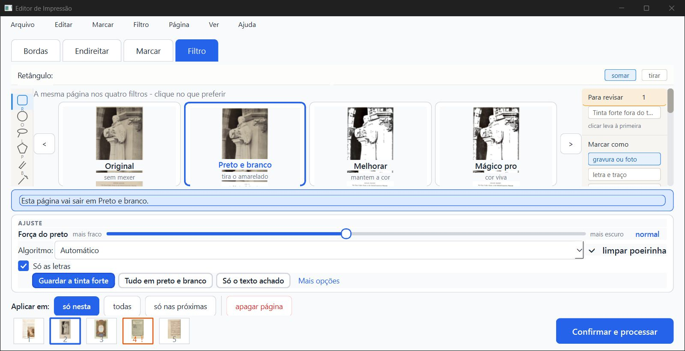
9b00960: pode ser só a captura fora da tela. Vale olhar no PC de verdade.teste_velocidade.py (12 min, só com o PC parado). Os consertos mexem na tela e na contagem de alertas, e o PDF saiu idêntico, ponto por ponto, nos dois projetos; o tempo de processar foi parecido (11,5 s × 10,9 s; 13,0 s × 12,9 s), mas isso não substitui o teste oficial.diff); eu repeti os 5 arquivos do Misto.9b00960.relatorios/conferir/misto-no-programa-2026-10-05/verificador-2/parecer-verificador-2-consertos-misto.htmlverificador-2/prints/ (26 arquivos, cerca de 150 KB cada)vm3.Editor de Impressão · gerado em 06/10/2026 às 03:25